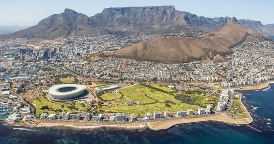
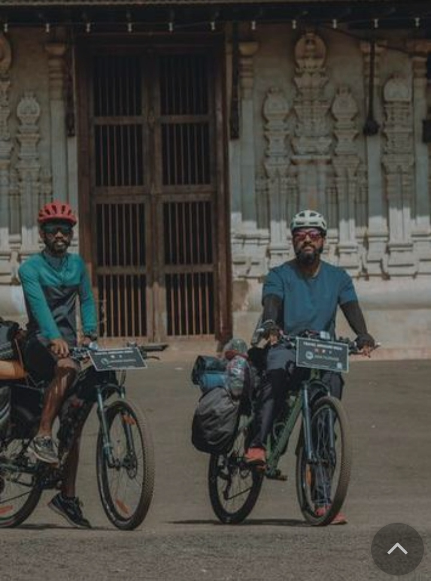

DOMESTIC TRAVEL
TOURIST PLACE
COVID-19 WORLD
Aviation ministry may discuss 5G concerns with telecom department
The move comes after Air India cancelled eight US-bound flights Wednesday amid widespread disruptions in air travel caused by concerns over the rollout of 5G services in the US and their impact on radar altimeters and auto-pilot systems.
Why COVID-19 means the era of ever cheaper air travel could be over
After its worst two years since the second world war, 2022 is looking brighter for the global airline industry. For passengers, though, the chance to travel at low cost again may prove short-lived.

UAE bans international travel for non-vaccinated citizens from January 10
In a stringent move to prevent the spread of COVID, the United Arab Emirates has announced a ban on unvaccinated citizens from travelling abroad from January 10. As per the news reports, fully vaccinated citizens would also require a booster shot to be eligible to travel. However, the said ban will not apply to those with medical or humanitarian exemptions.
Central Railway offers 150 acres of land for floriculture project
Commuters traveling on the suburban railway corridor will now get a pleasant view of the surrounding as Central Railway has offered around 150 acres of land across it main, harbour and trans-harbour line for the floriculture project.

Singapore's low-cost Scoot Airline to connect with six Indian cities
Good news for travellers as Scoot, Singapore's low-cost airline has now announced new flights to India. The flights will be operational under the ongoing air bubble travel arrangement, and a total of six Indian cities will be part of this. The airline has decided to operate flights between India and Singapore starting December 28
This winter, explore the princely state of Rajasthan! Here are our top 5 recommendations
If there is one place in India that packs in a range of diverse experiences for the discerning traveller, it is the royal state of Rajasthan. Whether it is the magnificent palaces of Udaipur and Jaipur, the impenetrable forts of Jaisalmer, or the forests of Sawai Madhopur teeming with wildlife, it is one state where there is always so much to do.

France lifts UK travel curbs, opening up ski holidays once again
France has now eased coronavirus travel restrictions for the UK. With this move, ski resorts in France are looking forward to welcoming British skiers. Earlier, the French government had banned all non-essential travel during the year-end holidays. This was done in order to prevent the Omicron variant of the virus from spreading. The ban was in place from December 18 onwards.

COVID-19 travel update: France eases border restrictions for vaccinated
A huge relief for vaccinated UK travellers! France has announced to ease border restrictions for all the vaccinated travellers from the UK amid the Omicron scare. Starting today (14 January, 2022), vaccinated travellers won’t need an essential reason to enter France.
England set to lift Covid-19 travel curbs betting Omicron has peaked
The lifting of Plan B measures, along with British Prime Minister Boris Johnson's navigation of Omicron without resorting to stringent lockdown, could help him appease vocal opponents of travel restrictions in his own party amid the party unrest. London view from the Elizabeth Tower, commonly known as Big Ben, at the Palace of Westminster. England set to lift Covid-19 travel rules betting Omicron has peaked (AFP)
Japan toughens Covid-19 travel curbs as Omicron drives record coronavirus cases
Japan's quasi-emergency measures, as they are called, permit governors to limit mobility and business activities, by shortening the operating hours of bars and restaurants and barring sales of alcohol.People wearing face masks, to help protect against the spread of the coronavirus, walk along a street lined with bars and restaurants in Tokyo. Tokyo and a dozen other areas in Japan are set to face new Covid-19 restrictions effective Friday, with local leaders shortening hours for restaurants, as Omicron cases hit a record high in the capital.
Thailand considers easing Covid-19 travel curbs as coronavirus infections reduce
Among the travel measures being considered are establishing more "sandbox" areas for tourists, who can skip quarantine if they stay in specified areas for seven days and undergo two Covid-19 tests.

South Africa's tourism industry pins hope as EU removes it from Covid red list
South Africa welcomes end of EU Covid red listing, thanks the many partners who had assisted in lobbying for its removal amid the coronavirus pandemic
Around the country on cycles
Around the country on cycles in a year and a half"Cycling is a perhaps the safest thing to do during a epidemic"
Budget Tourism
Budget tourism trips give a short in the arm for cash-strapped Kerala state road transport corporation